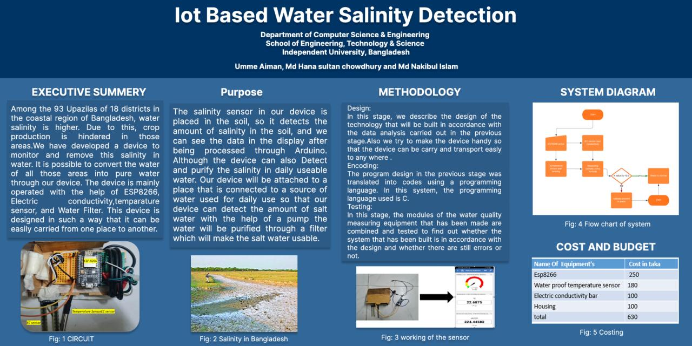
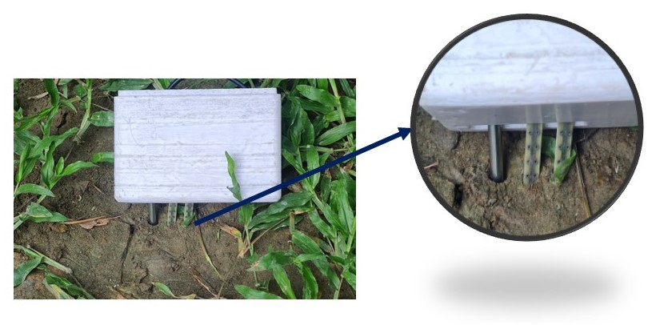
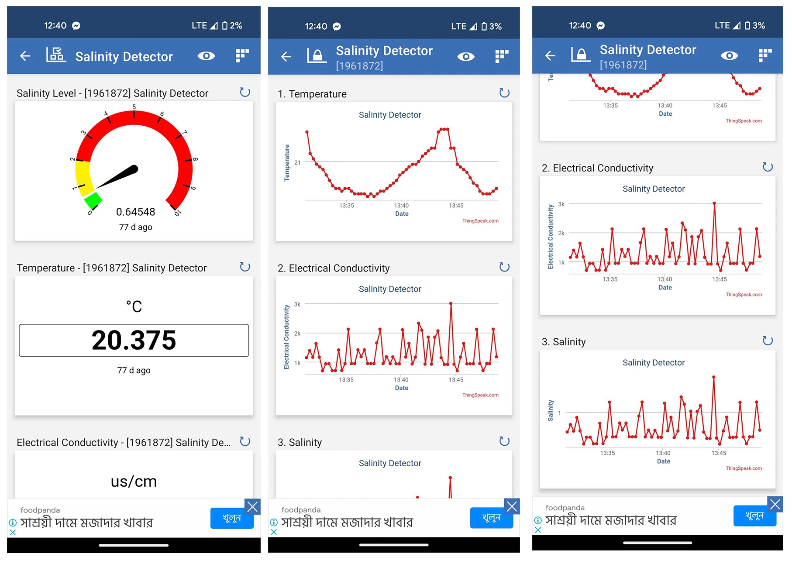

Research & Hardware · Independent University, Bangladesh · 2023
IoT-Based Soil Salinity Detection System
Across 93 upazilas in 18 coastal districts of Bangladesh, soil salinity is high enough to hold crop production back — and the same problem shows up across the border in coastal Myanmar. The frustrating part is that the tools to actually measure it, cheaply and in real time, mostly didn't exist for the farmers who needed them. Working with Umme Aiman and Hana Sultan Chowdhury, I built one.
The device itself is deliberately simple: an electrical conductivity sensor and a waterproof temperature sensor, both pushed into the soil, feeding readings into an ESP8266 microcontroller. Rather than requiring a lab test or a wait for results, it gives a farmer a salinity reading on the spot, processed and displayed immediately — and because the whole build is housed in a small, portable enclosure, it can be carried from field to field instead of being fixed in one place.
Getting from "sensor reading" to "useful information" took its own design process: work out how the device needed to be built and carried, translate that design into working code in C, then combine and test every module against the real design to catch anything that didn't hold up. The payoff of doing that properly is that the data doesn't just sit on the device — it streams out to ThingSpeak and into a phone app, so temperature, conductivity, and salinity can all be checked remotely, tracked over time, and compared across different plots of land.
Cost was never an afterthought. Every component — the ESP8266, the waterproof temperature sensor, the conductivity bar, the housing — adds up to about 630 taka, well under $10. That number matters more than the accuracy specs: a monitoring tool that's genuinely useful to a smallholder farmer in a developing country has to be something they can actually afford, not a research prototype that only makes sense in a lab. The field data backed up the reason the device needed to exist in the first place — salinity varies significantly from one region to the next, which means a single national average is useless and site-specific, real-time measurement is the only thing that actually helps.
The full methodology and findings are published at IEEE R10-HTC 2023, in my Publications section.
The Build


